新宿駅から徒歩6分、エイチクリニック新宿では、性病の即日検査・PCR検査を行っています。淋菌・クラミジア（喉・尿道）は、精度の高いPCR（遺伝子）検査で最短90分で結果が判明。HIV・梅毒・B型/C型肝炎・ヘルペスの即日検査にも対応し、結果に応じて当日の治療まで可能です。本名不要の匿名検査・完全個室・呼び出し番号制で、深夜23時30分まで（最終受付22:30）・土日祝も受診いただけます。「できるだけ早く結果を知りたい」「その日のうちに不安を解消したい」という方は、新宿で最短90分の性病検査ができる当院にご相談ください。
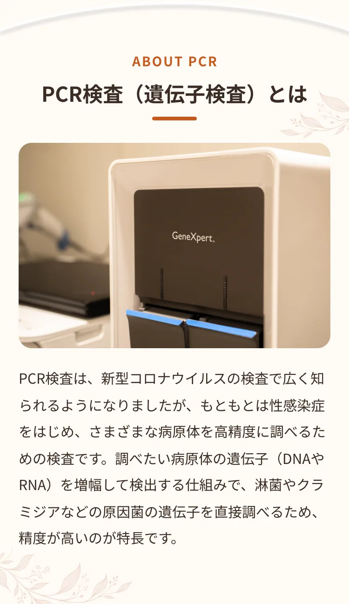
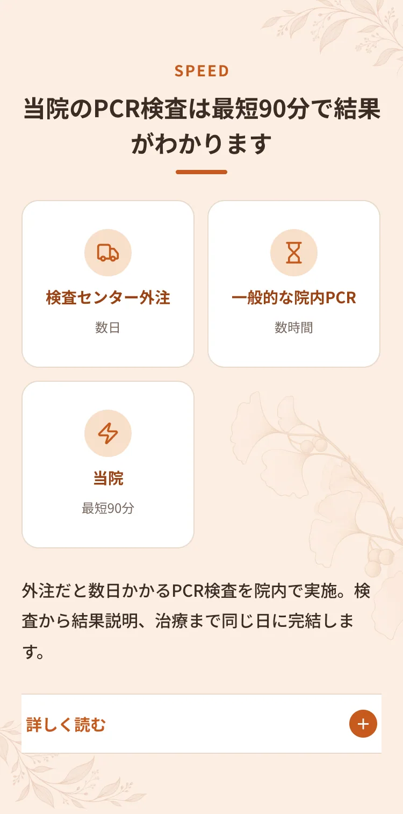
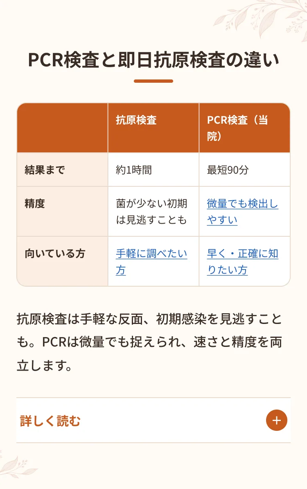
一般的に、PCR（遺伝子）検査は検査センターに外注すると結果まで数日かかることが多く、院内で行う場合でも数時間かかるのが通常です。当院では、淋菌・クラミジアのPCR検査を院内で行うことで、最短90分で結果をお伝えできる体制を整えています。検査から結果説明、陽性の場合の治療までを同じ日に院内で完結できるため、何度も足を運んだり、結果を長く待って不安な時間を過ごしたりする必要がありません。深夜23時30分まで診療しているため、お仕事帰りの遅い時間でも、その日のうちに結果を知ることができます。
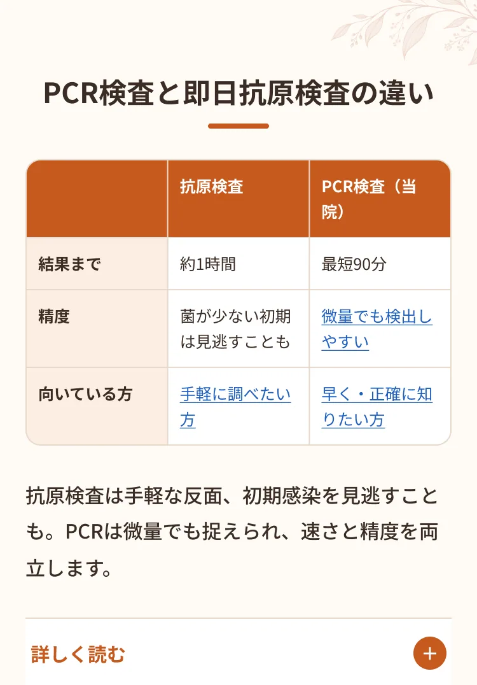
性病検査には、大きく分けて「抗原検査」と「PCR（遺伝子）検査」があります。抗原検査は1時間ほどで結果が出て手軽な反面、菌やウイルスの量が少ない初期感染では見逃してしまう（偽陰性となる）リスクがあります。一方、PCR検査は微量の菌でも遺伝子を増幅して捉えるため、初期感染も見逃しにくく、精度が高いのが特長です。当院では、精度の高いPCR検査を最短90分で提供することで、「速さ」と「精度」を両立しています。ただし、検査に適した時期（感染機会からの経過期間）は病原体によって異なるため、受診時にご相談ください。
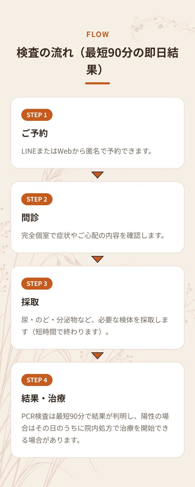
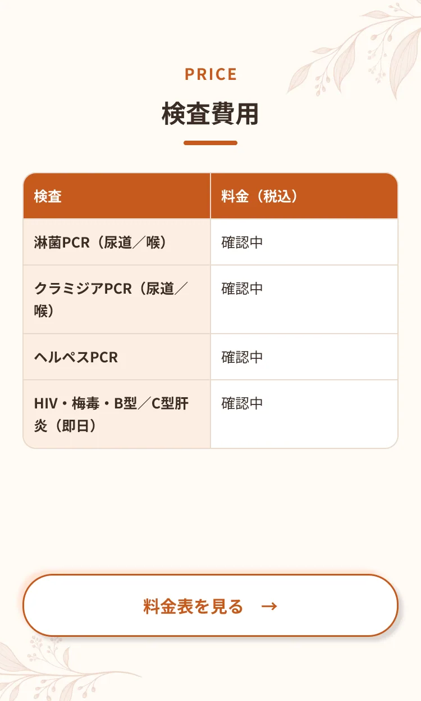
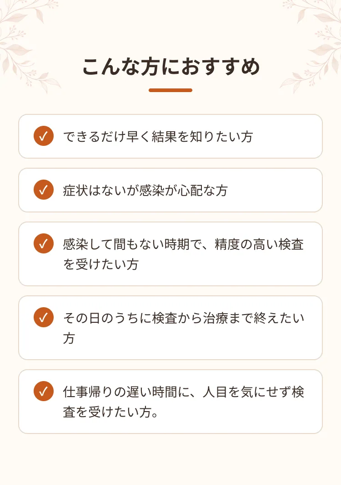
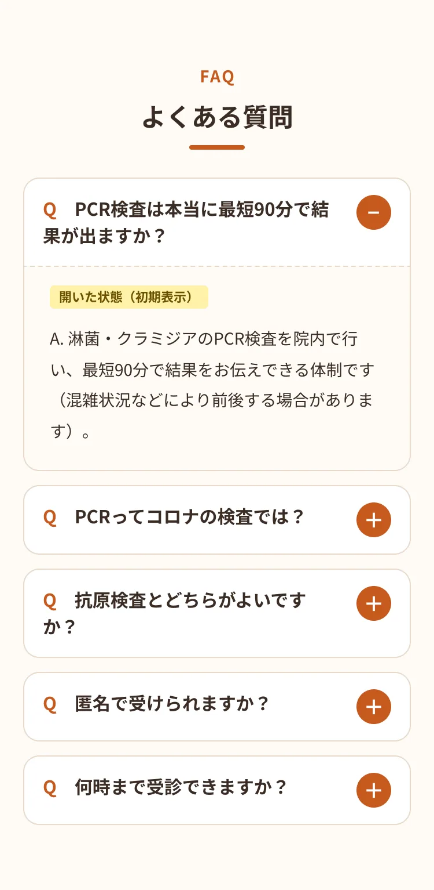

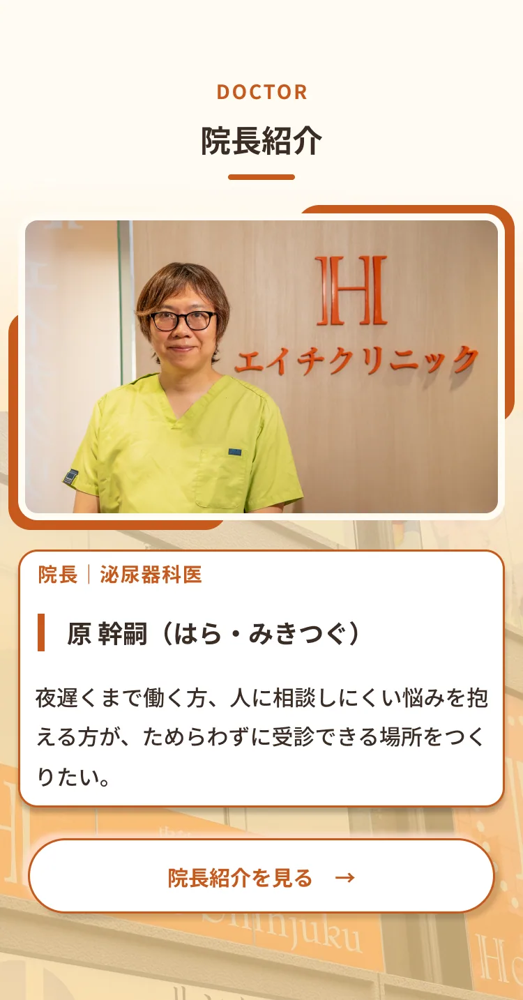
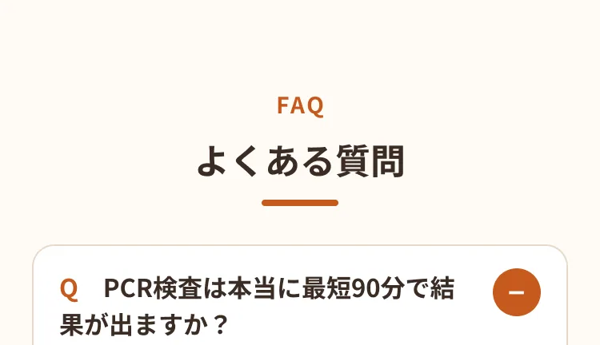
A.淋菌・クラミジアのPCR検査を院内で行い、最短90分で結果をお伝えできる体制です（混雑状況などにより前後する場合があります）。
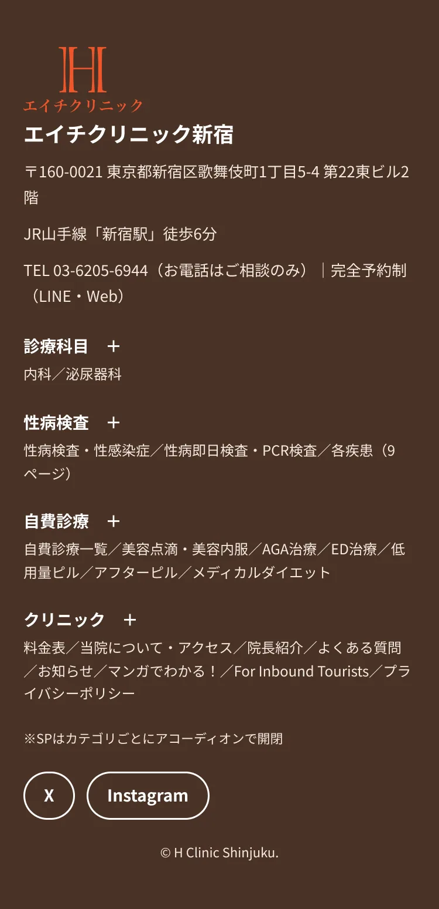
A.PCRはコロナで有名になりましたが、もともと性感染症など幅広い病原体を高精度に調べる検査です。
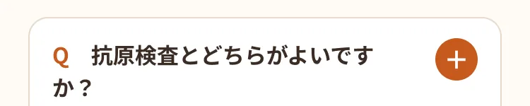
A.PCRは初期感染も見逃しにくく精度が高いのが特長です。検査に適した時期は病原体により異なるためご相談ください。
A.本名不要の匿名検査に対応しています。

A.深夜23:30まで（最終受付22:30）、土日祝も対応しています。